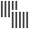

Find issues with the user interface of your app using the canvas and the view debugger controls.
Use the slider on the left of the view controls to adjust the spacing between the layers on the canvas. A larger space lets you find individual view objects more easily.
Click the Show Clipped Content button () to display the view hierarchy with the clipToBounds property of each view set to false. This results in displaying views whose bounds rectangle is partially or completely outside the bounds rectangle of one or more superviews.
The most common reasons for the view to be in the wrong position are setting the frame in code to an incorrect value or ambiguous, missing, conflicting, or incorrect constraints.
Click the Show Constraints button () to show the constraints for the selected view. The view debugger changes to show only outlines and dims any views that are not part of any of the displayed constraints. Some types of constraints display additional information as a badge on the center of the constraint. For example, an aspect ratio constraint displays the aspect ratio.
Click the Orient to 2D / 3D button ( / ) to toggle between dimensional orientations.
Click the Adjust the view mode button to choose the view mode from a pop-up menu.
Choose contents () to display the contents of views.
Choose wireframes () to display only wireframes of view objects.
Choose contents and wireframes () to display both the content of views and wireframes for all view objects.
Use the double ended slider on the lower right to change range of visible view objects.
Move the left handle to change the bottommost visible view object.
Move the right handle to change the topmost visible view object.